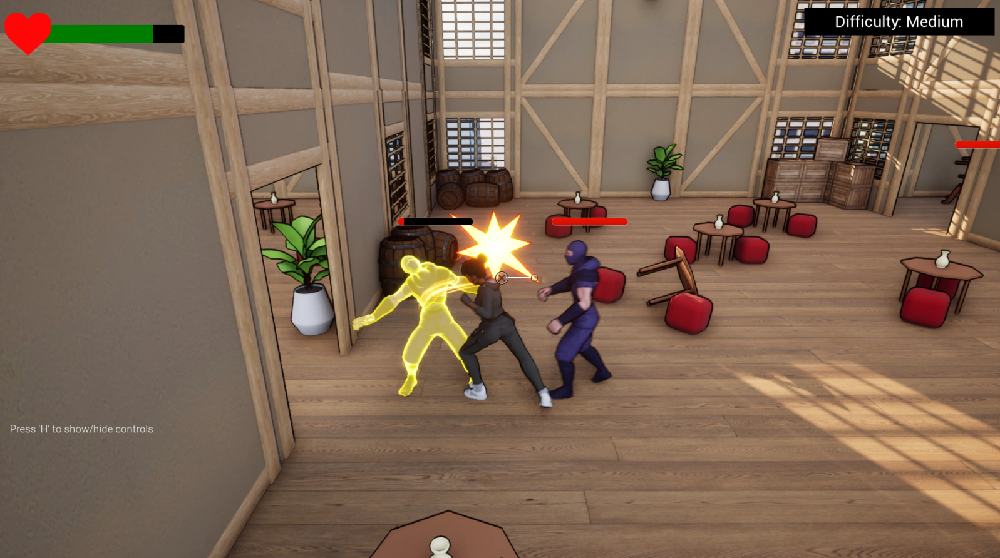
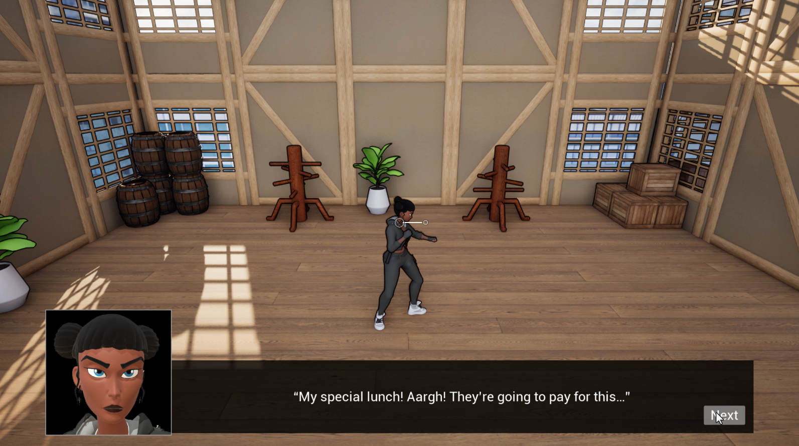

Lunch Fury
A short stylized 3D side-scrolling beat-em-up game.
Project Overview
A short stylized 3D side-scrolling beat-em-up inspired by classic arcade brawlers like Streets of Rage and Bare Knuckle.
After finishing her training for the day, Sunny orders a special lunch she has been looking forward to all day,d but a group of ninjas ambushes the delivery guy and steals it. Big mistake. Now fueled by pure hunger and rage, Sunny punches and kicks her way through waves of ninja enemies to reclaim what rightfully belongs to her: her lunch.
Lunch Fury is a small self-jam / vertical slice project developed in Unreal Engine 5 to explore responsive hand-to-hand combat mechanics, enemy encounters, hit reactions, combat timing, and arcade-style gameplay flow. No generative AI was used in the development of this game.
The goal was to create something simple, fast, satisfying, and replayable while keeping the tone intentionally lighthearted and relatable — because honestly, everyone understands the pain of having the food you were waiting for suddenly taken away.
The current version is intentionally short and contained within a single level. Future updates may expand it further with boss fights, additional levels, more enemy variations, and extended story elements.
Controls: Move (WASD), Jump (Space), Punch (Left Mouse Button), Kick (Right Mouse Button), Sprint (Left Shift + WASD).
Tools
Technical Details
Combat System: Punches, Kicks & Hit Reactions
Lunch Fury's combat centers on responsive fist-and-kick attacks, bound to left and right mouse click, designed to feel immediate rather than complex. The project was built specifically as a self-jam vertical slice to explore hand-to-hand combat mechanics, hit reactions, and combat timing in Unreal Engine 5.
A large focus was placed on tuning enemy hit reactions and player feedback so that every strike lands with clear, readable impact, reinforcing the arcade-style feel the game was aiming for.
No AI tools were used in the development of this game - all combat animations, hit reactions, and gameplay logic were built and tuned by hand.
Enemy Waves: Difficulty Modes & Arcade Progression
Players fight through multiple waves of ninja enemies across a single side-scrolling level, working to reclaim a stolen lunch order in an intentionally lighthearted, arcade-inspired premise.
Selectable difficulty modes adjust the challenge of these encounters, giving the short experience some replay value despite its compact scope. Enemy AI behavior and encounter pacing were tuned to keep each wave feeling fast and satisfying rather than drawn out.
The wave and difficulty structure takes clear inspiration from classic arcade brawlers like Streets of Rage and Bare Knuckle, prioritizing short, replayable sessions over longer-form pacing.
Movement & Game Feel: Double-Jump, Sprint & Pacing
Beyond combat, movement includes sprinting and a double-jump mechanic to keep traversal snappy across the level, paired with an upbeat action music track that reinforces the game's pacing and energy.
Stylized visuals and a simple, comedic narrative - a food-delivery ambush gone wrong - were used to keep the tone light, while development focus stayed on combat feel, animation responsiveness, and clean UE5 gameplay systems.
The current version is intentionally short and contained within a single level; future updates may expand it further with boss fights, additional levels, and more enemy variety.
Gallery

